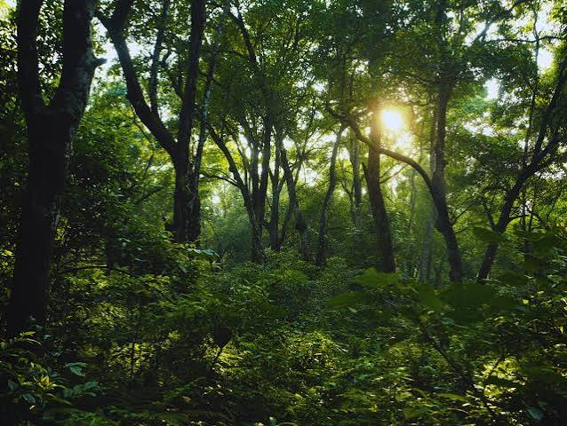
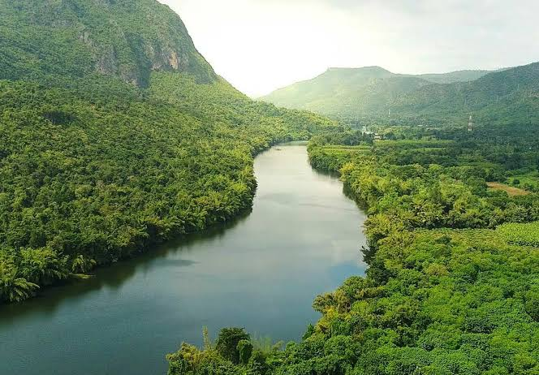
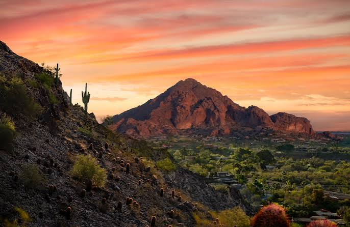
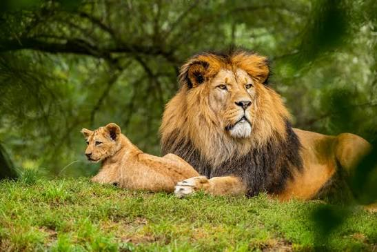

Join our Nature Explorer Page on an exciting adventure designed for curious travelers who love to discover the wonders of forests, rivers, mountains, and wildlife in one place. This page invites you to imagine hiking under tall trees while listening to birds, paddling along sparkling rivers that wind through green valleys, scaling rocky mountain trails that reveal vast skies, and watching animals roam freely in peaceful habitats. Every description here is meant to inspire curiosity, promote outdoor exploration, and encourage young adventurers to care for nature with respect, joy, and a sense of discovery and keep memories of adventure alive.
Stepping into the forest adventure feels like walking into a living story where every tree, bird, animal, and hidden trail offers a new surprise. In this magical green world, sunlight filters through towering branches, dew sparkles on fern leaves, and curious animals peek from behind trunks. Explorers learn to listen to the forest heartbeat, follow paths lined with moss, and imagine secret campsites beside gentle streams. The forest teaches patience and respect, reminding us that each creature and plant plays a role in keeping the planet healthy, balanced, and full of natural wonder and invites everyone to share the experience.

A river journey is one of the most exciting outdoor adventures because it carries you through changing landscapes as water flows with strength and grace. Along the banks, explorers can watch dragonflies dance, hear the soft splash of fish, and feel the cool mist rising when rapids rush by. Rivers provide essential water for people, plants, and animals while creating peaceful picnic spots, secret paths, and wildlife glimpses. This journey teaches adventure lovers how to respect water, follow safe routes, care for river habitats, and appreciate the endless beauty that flowing water brings to our natural world with wonder.

A mountain view adventure invites explorers to climb toward the clouds and feel a powerful sense of freedom at every step. Mountains are tall landforms that lift us high above valleys, giving us amazing views of winding trails, forests below, and distant skies. Along the way, hikers learn to move carefully over rocky ground, spot unique plants adapted to cooler air, and imagine the stories of mountain peaks that have stood for ages. This adventure encourages us to respect the mountain environment, keep trails clean, stay safe, and celebrate the strength and beauty of nature above the world with wonder.

The wildlife zone is a thrilling part of the nature explorer page where every visit becomes a gentle adventure in learning to share space with the animals that live freely in forests, riversides, mountains, and meadows. Watching wildlife from a careful distance teaches us to stay quiet, respect bedtime and feeding habits, and appreciate the way each creature moves to survive. We learn that protecting their homes is important, because every species helps keep nature healthy and balanced. This zone encourages us to carry out kindness, keep the environment safe, and explore with respect, curiosity, and a caring heart always.

Nature Tip: Protecting nature means protecting our future, because healthy forests, clean rivers, safe mountains, and thriving wildlife all work together to keep the air pure, water fresh, and the land strong for the people and animals who depend on it. When we choose to respect plants, keep litter out of wild spaces, move gently around animal homes, and learn how to share the outdoors responsibly, we create a brighter tomorrow. Every small action in protecting the environment adds up to a great journey of care, adventure, and hope for the world ahead. Let the adventure of conservation guide us.